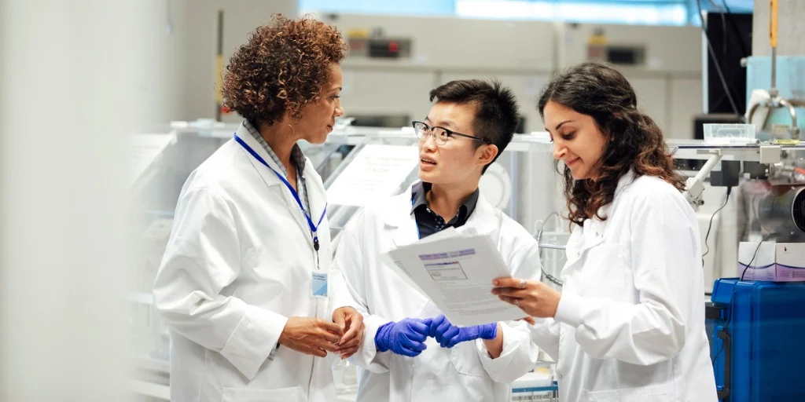

United Nations Goal 3
Imagine a world being better educated, safer, and fed, with less suffering and furthermore a sunny Scotland.
Maybe the last one is a bit far-fetched but you get the point. The United Nations (UN) has set goals to get closer
to the ideal life for everyone globally. I’ll show you how generative AI can help, putting some focus on goal 3
“Ensure healthy lives and promote well-being for all at all ages.” (Goal 3 | Department of Economic and Social Affairs, 2025)
A very important concept that generative AI has enhanced and hopefully can continue to.
Technology allows for development in the healthcare sector such as improved pharmaceutical innovation, which is just a fancy couple of words for
development of drugs. The helping kind, none the recreational nonsense. Another aspect that is quite interesting and very useful
is personalising medication toindividuals. Aiming to reduce the impact of diseases/illnesses. I will explore how generative AI
can contribute to the United Nations goal 3.

Generative AI can benefit the medical industry significantly with more effective drug discovery methods, the software
looks at various different molecular structure combinations and can model the outcome of lots of different variations
of drugs(Reddy, 2024). The technology will test lots of different drugs at once, picking the ones most likely to work and put them
into real life testing, in the form of clinical trials, normally as step one. In a study, it was concluded that 90
percent of clinical trials did not work (Reporter and Francisco, 2025).
The process of creating cures and or managing the impact on the human body,
for diseases is way more efficient: quicker and cost effective with the help of generative AI (Thacharodi et al., 2024).
The price of clinical trials in the UK can vary a lot and depend on many factors but most clinical trials cost around a million pounds(Hind et al., 2017).
Charities, government and drug companies are the way in which most drugs research and development are funded in the UK (How clinical trials are funded in
the UK | Cancer Research UK, 2025). By reducing the costs, more life saving treatments can be discovered and extra money into the NHS and improving health
and wellbeing will be very helpful. The current time taken to create a new drug can be anywhere from a decade to a decade and a half (Trust, 2025). With the
use of Generative AI the aim is to reduce the time taken so the impact of diseases is minimised.

Another example of a great use of generative AI, personalised treatment. Medicine based on a persons genomic sequence,
and specific mutations to better treat patients(Reddy, 2024). Generative AI does this by analysis and simulating the outcome of (specific) drugs. Personalised
medicine can be used to treat cancer, it is a good example since there are a couple hundred different types of cancers(Cancer, 2025).
Machine learning has
enabled the technology to read and identify trends, which medicines work well corresponding to their “patients genetic makeup, lifestyle and medical history.”
(Thacharodi et al., 2024). Cancer is a disease which causes cells to grow excessively and in an uncontrolled way. Cancer was the cause of death for just under
ten million people worldwide in 2022 and statistics show around twenty percent of people will develop cancer in their lifetime(Global cancer burden growing,
amidst mounting need for services, 2025). By implementing treatment specific to individuals, we can try to “ensure good health and wellbeing for all.”
In the education side of things, generative AI can be very useful to learners. Generative AI allows for medical
students to simulate and experiment with situations created by the software(Reddy, 2024). This means that pupils can learn and
practice with no bad implication of any mistakes made, patients will still have all 10 fingers.
The use of AI can
help teachers by keeping a record of the strengths and weaknesses of the class. Which means key areas that may need
to be recapped and further explained can be identified. The universally understood feeling of stress or anxiety or
other mental struggles, can commonly be a result of school, university, college work etc. Would you be surprised if
I told you Generative AI can help? Probably not, it's getting to the stage where you have to wonder what can't it do!
AI can help with worries and stress or negative feelings by responding to what you send (Akbar, 2025). Services such as Chat GPT or
generative AI software specifically targeted at tackling mental health can be helpful, especially for those who may
struggle with approaching or reaching out to a human being for help.
Which means that more people can get some support
which may ease worries and stress. A massive benefit of it also is that the technology does not need sleep as such so it
is accessible over the internet anytime and from anywhere.
Generative AI is a great tool with many benefits including helping students with learning by creating study planners
and organising information, this can make students more effective with revising. Revising, an activity that I've never
enjoyed particularly, and not many do. We as humans may be tempted to put off the work and leave it as late as
possible in some cases (Student Syndrome: Why People Delay Until Right Before Deadlines – Solving Procrastination, n.d.). This is more stressful and the quality of work may not be to the best of the students ability(Adeel et al., 2023).
Using a study planner generated to a students specific needs, will helpm students to be better structured and so in a
better routine(Making a revision timetable that actually works - The Uni Guide, 2025). Students am more likely to be prepared for tests and have enhanced understanding of concepts and improve
the tedious chore of studying! Students will appreciate AI a little more since it gives out immediate responses. Which means time
can be saved and enable anyone to work continuously without having to wait for human input. Therefore more work is
able to be completed in a shorter space of time and additionally the use of AI by students, can cause less stress for
educators. There are less emails and Microsoft teams queries to respond to (mediaofficer, 2025). This will leave more time for the
things enjoyable in life.
Furthermore AI can help find the appropriate study resources, like videos or websites to
assist with learning if students become stuck and need more support. For more infotmation on this click here.
I support the use of AI in the future, I have explored how the use of generative AI can be of huge benefit in a general sense,
and also towards getting closer to the UN goal objective to “Ensure healthy lives and promote well-being for all at all ages.”
I hope to have widened your understanding of the good in which generative AI is capable of, as the technology is not
always shown in good light. Generative AI can have lots of health benefits such as personalised treatment, better drug
development and better education for medical professionals. Day by day we are seeing more progress, and there is still
lots more to discover. Generative AI is how we can move forward and it is fuel innovation.